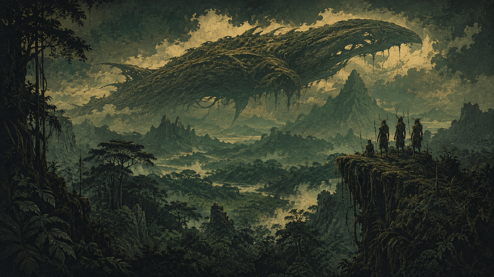

04 / 06 · Rudel · Fenwyld
Lykaner
Leben wird nicht gebaut. Es wird gebunden.
Übersicht
Über 100 Jahre vor der Zerstörung der Erde stieß die bereits raumfahrende Menschheit auf den Dschungelplaneten Fenwyld — und auf die Lykaner, die dort isoliert und naturverbunden lebten, ohne jedes Interesse an Raumfahrt oder Kontakt nach außen. Schutzlos waren sie der überlegenen Technologie ausgeliefert. Versklavt, systematisch, ein bis heute allgemein bekanntes historisches Faktum. Erst als die menschliche Macht zusammenbrach, endete diese erste Versklavung — nicht durch bewusste Befreiung, sondern als bloße Nebenwirkung eines größeren Zusammenbruchs.
In der kurzen Freiheit danach gelang den klügsten Schamanen etwas Historisches: die Erschaffung der ersten lebenden Schiffe, eine eigene, schamanisch-technische Errungenschaft. Kein Geschenk, keine Übernahme fremder Technik — aus eigenem Antrieb erreichten die Lykaner damit das galaktische Zeitalter. Lange hielt die Freiheit nicht. Das expandierende Nyxaren-Imperium unterwarf sie zwischen ~40 und 90 n.Z. ein zweites Mal, und diesmal endgültig.
Religion
Ein Pantheon, angeführt von der höchsten Gottheit: Gaya, die Mutter Erde. Ihr untergeordnet sind Gweyir für die Flüsse, Bellas für die Erde, Raeran für Wind und Wetter, Finnea für die Wälder — jede Kraft der Natur hat ihre eigene Stimme. Die lebenden Schiffe dagegen bleiben religiös neutral, kein kultisches Objekt, so beeindruckend sie auch sind.
Die Schamanenhierarchie durchläuft sechs Stufen: Anwärter, Priester, Hohepriester, Schamane — bis hierhin alle Geschlechter zugelassen —, dann Hohe Schamanin und schließlich Hohepriesterin Gayas, nur noch weiblich besetzt. Gemeinsam bilden die Hohepriesterinnen den Rat der Schamanen. Aus ihrem Kreis wird auf Lebenszeit die Mutter gewählt — Stimme Gayas auf Fenwyld, höchste Autorität des Volkes.
Gesellschaft & Alltag
Lose, dezentral, organisiert in Rudeln — kein festes Häuser-Schema wie bei den Nyxaren, keine formale Zwischenebene. Die lokale Führung liegt direkt bei den ansässigen Schamanen. Die meisten Lykaner leben ganz gewöhnlich als Handwerker, Jäger, Sammler, Bauern oder Kämpfer, je nachdem, wo das Rudel gerade Bedarf hat.
Fremden und hoher Technologie begegnet man mit tiefem Misstrauen. Kein Zufall: Es ist die zentrale Lehre aus der doppelten Versklavungserfahrung. Stärke, so die stille Überzeugung, ist der beste Schutz vor erneuter Unterwerfung — und die einzige Garantie, die man sich selbst geben kann.
Militär
Eine Kriegerkaste gibt es nicht — im Ernstfall wird jedes wehrfähige Rudelmitglied herangezogen, fertig. Als Jäger sind die Lykaner exzellent: primitive Fernkampfwaffen, Bögen und Wurfwaffen, zum Aufspüren und Schwächen von Beute oder Gegnern, gefolgt von tödlichem, direktem Nahkampf. Zwei Phasen, ein Instinkt.
Von hochentwickelter Zauberei kann keine Rede sein — eher rudimentäre Magie, vor allem gemeinschaftliche Rituale innerhalb des Rudels, mit denen sich die Lykaner gegenseitig „pushen" und so übernatürliche Stärke erlangen. Dazu eine Flotte lebender Kampfschiffe, vierstufig gegliedert: Fänger, Meute, Wächterschiff, Trägerschiff — vom wendigen Einzeljäger bis zum mobilen Lebensraum ganzer Rudel.
Sprache & Namen
Keltisch inspirierter Klang, passend zu den Götternamen des Pantheons. Die Struktur: Vorname plus Rudelname, etwa Fira Dunmoor. Wer den schamanischen Pfad geht — ab Priester aufwärts —, trägt zusätzlich das Partikel „Sil-" vor dem Rudelnamen, wird also zu Fira Sil-Dunmoor. Ein kleines Wortstück, das sofort verrät, wen man vor sich hat.
Rollen im Rudel
Naturverbunden wie die Orks, aber eigenständig geprägt — vier zentrale Rollen strukturieren das Leben im Rudel, jede mit ihrem eigenen Beitrag zum Ganzen.
Krieger
Verteidiger des Rudels, ausgebildet an Speer, Bogen und Kralle.
- Rudeltaktik — Bonus im Kampf, wenn mit anderen Lykanern gemeinsam gekämpft wird.
- Zähigkeit Fenwylds — erhöhte Widerstandsfähigkeit gegen Gift und Krankheit.
Schamane
Wandelt auf dem Pfad zur Priesterschaft, spricht mit Gaya und ihrem Pantheon.
- Ritualgesang — Bonus auf Okkultismus bei gemeinschaftlichen Ritualen.
- Blick durch den Wald — Wahrnehmung nutzbar, um Wettereinflüsse Raerans vorherzusehen.
Jäger & Sammler
Kennt Fenwyld wie kein anderer, versorgt das Rudel.
- Fährtenleser — Bonus auf Wahrnehmung im Gelände.
- Ein mit dem Dschungel — Bonus auf Heimlichkeit in Wäldern/Dschungeln.
Handwerker
Baut Werkzeug, Waffen und pflegt die Bindung zu den lebenden Schiffen.
- Schiffsbindung — Bonus auf Technik im Umgang mit lebenden Schiffen.
- Geschickte Hand — Bonus auf Fingerfertigkeit bei traditioneller Handwerkskunst.
Schlüsselfigur: Eirwen Sil-Aethra, die Mutter
Bereits vor der Rebellion, um ~290 n.Z., zur Mutter gewählt — über 50 Jahre im Amt, mittlerweile. Eine zurückhaltende, rätselhafte Mystikerin. Sie spricht wenig, und wenn, dann in Bildern und Andeutungen statt klarer Ansagen — wer eine eindeutige Order erwartet, wird bei Eirwen enttäuscht.
Bewusst neutral gegenüber der taktischen Spaltung der Rudel, wohlgemerkt: nicht aus Unentschlossenheit, sondern aus tiefer Überzeugung. Ein geeintes Volk, so ihre Haltung, ist mehr wert als eine „richtige" Strategie — selbst wenn das bedeutet, keine Seite ganz zufriedenzustellen.
Blick nach außen
Terraner: zwiespältig. Die alte Versklavung wiegt schwer, aber die gemeinsame Rebellionserfahrung wiegt eben auch — die Steuerleute führen sie aktiv als Grundlage für Bündnispolitik ins Feld. Nyxaren: feindselig, ganz einfach. Der Frieden nach der Rebellion bleibt brüchig, bis heute.
Orks: kein genetisches Verwandtschaftsverhältnis, wie man früher annahm — aber ein historisch schwer belastetes. Täter-Werkzeug auf der einen Seite, Opfer auf der anderen, mit Raum für komplizierte Annäherung statt nur Feindschaft. Aeldir: Neugier, fast schon Faszination. Und Prometheaner? Tiefes Misstrauen — eine unnatürliche, maschinelle Schöpfung, die dem naturverbundenen Selbstverständnis der Lykaner fundamental widerspricht.